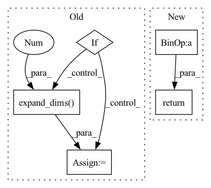

Pattern ID :10977

Before Change
def call(self, inputs):
如果是条件Layer Norm，则默认以list为输入，第二个是condition
if self.conditional:
inputs, cond = inputs
if self.hidden_units is not None:
cond = self.hidden_dense(cond)
for _ in range(K.ndim(inputs) - K.ndim(cond)):
cond = K.expand_dims(cond, 1)
if self.center:
beta = self.beta_dense(cond) + self.beta
if self.scale:
gamma = self.gamma_dense(cond) + self.gamma
After Change
if self.scale:
var = K.mean(K.square(output), axis=-1, keepdims=True)
std = K.sqrt(var + self.epsilon)
output = output / std * self.gamma
if self.center:
output += self.beta
return output
def compute_mask(self, inputs, mask=None):
return mask
In pattern: SUPERPATTERN
Frequency: 3
Non-data size: 5
Instances
Fragment ID: 37852915
Project Name: xv44586/toolkit4nlp
Commit Name: e5ebcd49fedb384476b70be4f3f89c32beb901e6
Time: 2020-07-16
Author: mingming.xu@zhaopin.com.cn
File Name: toolkit4nlp/layers.py
M Class Name: LayerNormalization
N Class Name: LayerNormalization
M Method Name: call(2)
N Method Name: call(2)
M Parent Class: Layer
N Parent Class: Layer
M File Name: toolkit4nlp/layers.py
N File Name: toolkit4nlp/layers.py
M Start Line: 205
M End Line: 233
N Start Line: 153
N End Line: 166
'>
Before Change
if tf.reduce_max(image) < 2:
image *= 255
image = tf.image.resize(image, input_shape, method=resize_method, antialias=resize_antialias)
if len(image.shape) == 3:
image = tf.expand_dims(image, 0)
if self.rescale_mode == "raw":
return image
elif self.rescale_mode == "raw01":
After Change
self.set_input_shape(input_shape)
images = [image] if len(np.shape(image)) == 3 else image
images = [np.array(Image.fromarray(image).resize(self.input_shape)) for image in images]
images = (np.stack(images) - self.mean) / self.std
images = images if backend.image_data_format() == "channels_last" else images.transpose([0, 3, 1, 2])
return functional.convert_to_tensor(images)
def imagenet_decode_predictions(preds, top=5):
'>
Fragment ID: 37852916
Project Name: leondgarse/keras_cv_attention_models
Commit Name: 2f70b0d51c8f2b1f8664f32dc75ecc1001758946
Time: 2023-01-29
Author: leondgarse@gmail.com
File Name: keras_cv_attention_models/common_layers.py
M Class Name: PreprocessInput
N Class Name: PreprocessInput
M Method Name: __call__(5)
N Method Name: __call__(5)
M Parent Class:
N Parent Class:
M File Name: keras_cv_attention_models/common_layers.py
N File Name: keras_cv_attention_models/common_layers.py
M Start Line: 586
M End Line: 601
N Start Line: 609
N End Line: 616
'>
Before Change
def call(self, inputs):
如果是条件Layer Norm，则默认以list为输入，第二个是condition
if self.conditional:
inputs, cond = inputs
if self.hidden_units is not None:
cond = self.hidden_dense(cond)
for _ in range(K.ndim(inputs) - K.ndim(cond)):
cond = K.expand_dims(cond, 1)
if self.center:
beta = self.beta_dense(cond) + self.beta
if self.scale:
gamma = self.gamma_dense(cond) + self.gamma
After Change
if self.scale:
var = K.mean(K.square(output), axis=-1, keepdims=True)
std = K.sqrt(var + self.epsilon)
output = output / std * self.gamma
if self.center:
output += self.beta
return output
def compute_mask(self, inputs, mask=None):
return mask
'>
Fragment ID: 37852908
Project Name: xv44586/toolkit4nlp
Commit Name: 198aad92a847cec43743c3dbeabfbc452e0a4894
Time: 2020-07-18
Author: xv44586@gmail.com
File Name: toolkit4nlp/layers.py
M Class Name: LayerNormalization
N Class Name: LayerNormalization
M Method Name: call(2)
N Method Name: call(2)
M Parent Class: Layer
N Parent Class: Layer
M File Name: toolkit4nlp/layers.py
N File Name: toolkit4nlp/layers.py
M Start Line: 205
M End Line: 233
N Start Line: 153
N End Line: 166